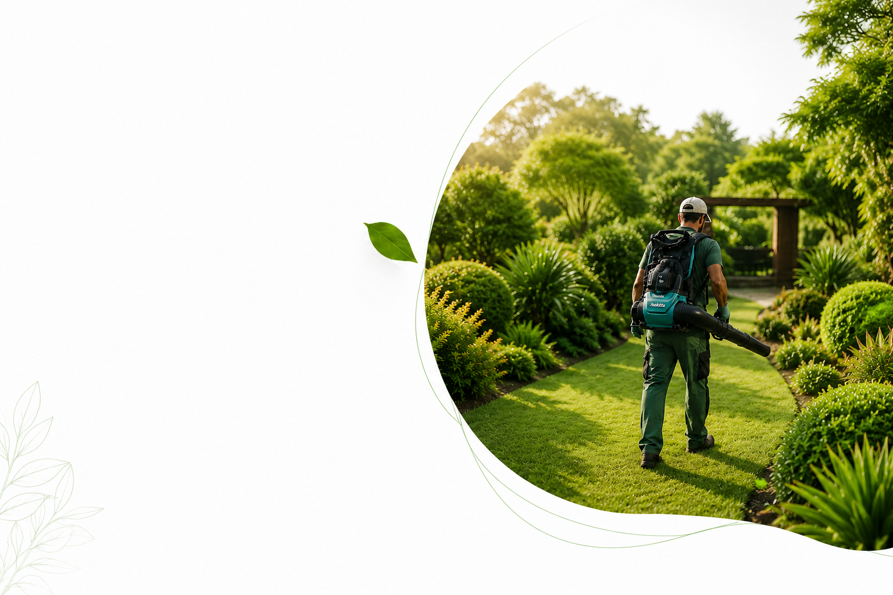
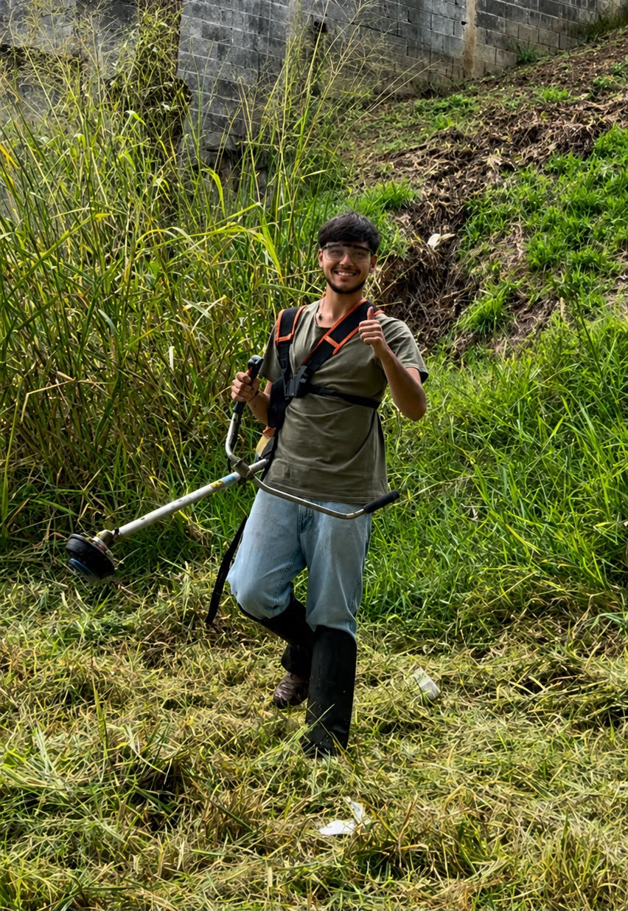
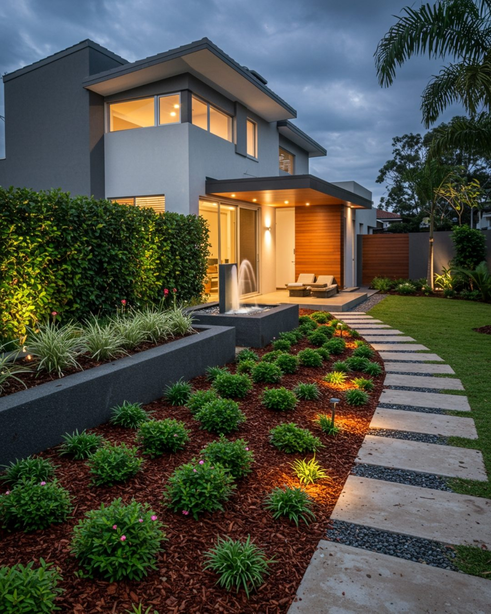

Projetos personalizados
Soluções únicas para cada espaço e necessidade.
JARDINAGEM • PAISAGISMO • MANUTENÇÃO
Criamos e cuidamos de jardins que inspiram bem-estar,
valorizam ambientes e conectam você ao que há de melhor:
a natureza.

Soluções únicas para cada espaço e necessidade.
Cuidados contínuos para jardins sempre saudáveis e bonitos.
Profissionais experientes e apaixonados pelo que fazem.
Práticas responsáveis que preservam o futuro.
SOBRE NÓS
A Raiz Silvestre nasceu da união entre tradição familiar, amor pela natureza e dedicação à jardinagem.
O nome da marca carrega um significado especial. A família Silvestre sempre teve uma forte ligação com a jardinagem e o cuidado com as plantas. Ao criar a Raiz Silvestre, Juliano Silvestre Diogo buscou resgatar essa história e manter viva uma tradição que atravessa gerações, valorizando as raízes que o conectam a esse trabalho.

Serviços
Soluções completas para criação, revitalização, manutenção e valorização de jardins e áreas verdes.
Criamos jardins personalizados que valorizam seu espaço e trazem mais vida ao seu dia a dia.

Solo saudável é a base de um jardim bonito e duradouro. Cuidamos da estrutura e nutrição para o melhor crescimento das plantas.

Manutenção completa para manter seu jardim sempre bonito, saudável e bem cuidado.

Projetos personalizados para transformar seu espaço com funcionalidade, beleza e harmonia.

Galeria
Confira alguns exemplos de vasos, composições e serviços de paisagismo desenvolvidos pela Raiz Silvestre.
Depoimentos
A satisfação de quem confia no nosso trabalho é o que nos motiva a cuidar de cada detalhe com excelência.
A equipe transformou completamente nosso jardim, com acabamento impecável e um atendimento muito atencioso do início ao fim.

Residencial
Profissionalismo, pontualidade e muito cuidado com as plantas. O resultado trouxe mais vida e sofisticação ao espaço.

Condomínio
O projeto ficou elegante e muito bem pensado. A jardinagem valorizou a fachada e passou exatamente a imagem que queríamos.

Comercial
O cuidado com os detalhes fez toda a diferença. Ficou bonito, funcional e com cara de projeto premium.

Empresarial
Atendimento impecável e resultado acima do esperado. Nosso jardim ganhou presença sem perder naturalidade.

Residencial
Um serviço sério, elegante e muito bem executado. A empresa entregou exatamente a atmosfera que imaginávamos para a área externa.

Comercial
Diferenciais
Cada espaço é analisado com cuidado para receber a solução mais adequada.
Experiência prática aliada ao conhecimento técnico para um resultado mais seguro e duradouro.
Uma história conectada à jardinagem e ao cuidado com as plantas ao longo das gerações.
Detalhes que valorizam o jardim e deixam o ambiente mais harmonioso e bem cuidado.
Contato
Entre em contato para tirar dúvidas, solicitar uma visita técnica ou pedir um orçamento. Será um prazer entender o seu espaço e propor a melhor solução para o seu jardim.
Atendimento em Jundiaí e região.